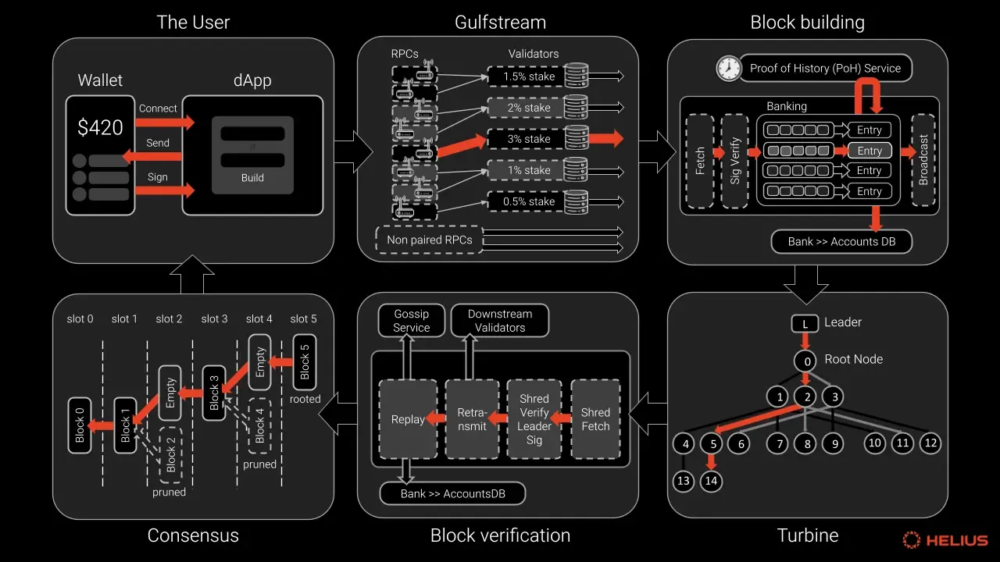
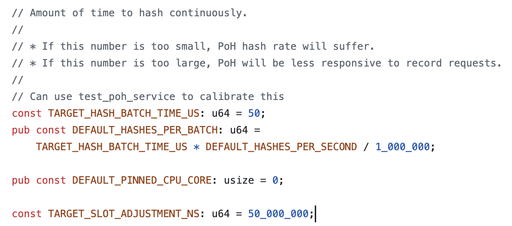
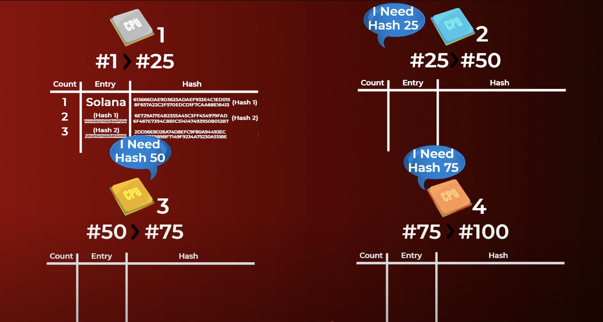
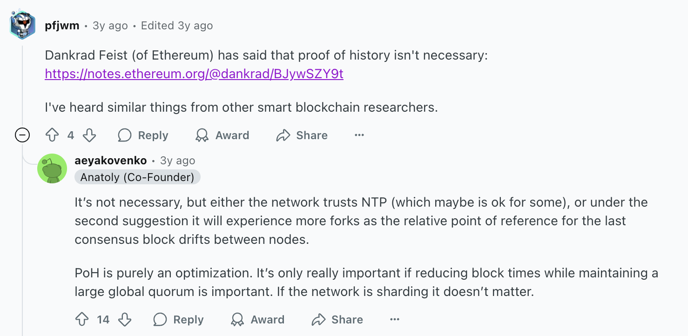
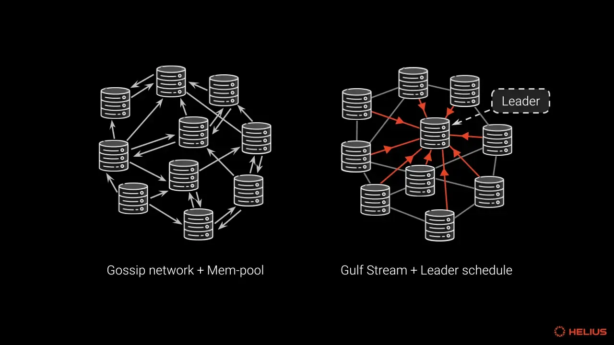
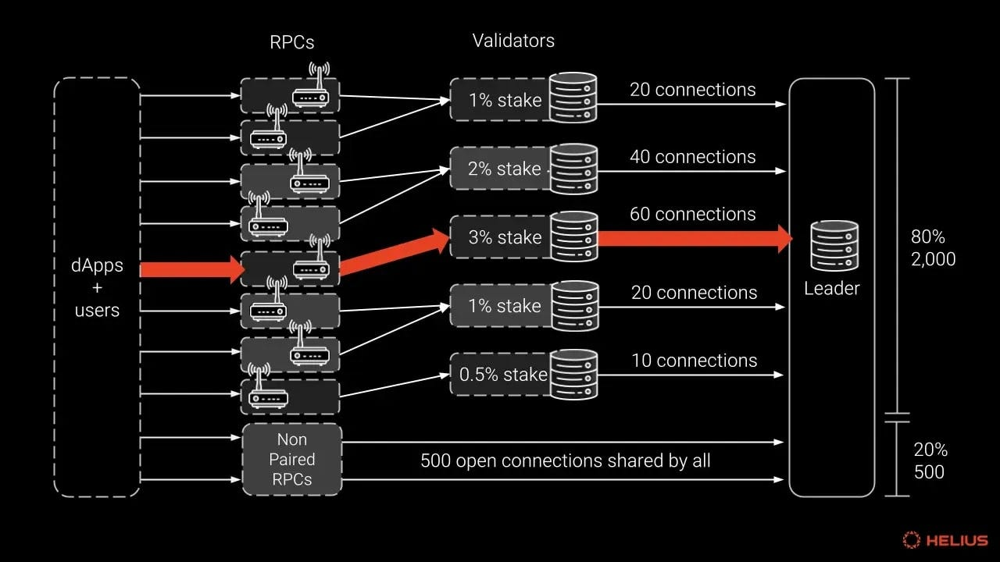
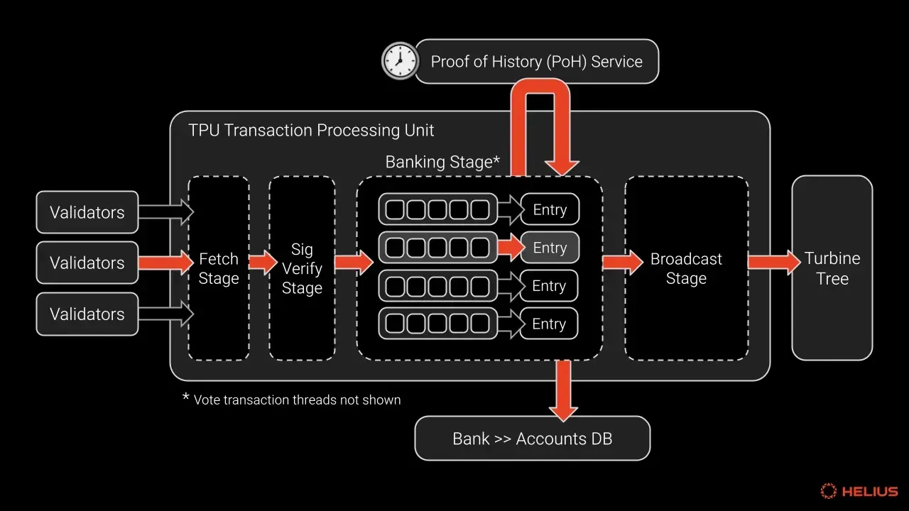

SOLANA: From Basics to Transaction Lifetime
A comprehensive journey through Solana's architecture, from fundamental concepts to the complete transaction processing lifecycle
학습 내용: 이더리움 트랜잭션 생명주기, 솔라나의 리더 메커니즘, PoH 합의, 트랜잭션 구조, Gulfstream 포워딩, Banking Stage 처리, Turbine 전파, 그리고 완전한 종단간 트랜잭션 플로우 비교
1단계: 생성 및 서명
Creation & Signing
2단계: JSON-RPC 엔드포인트로 제출
JSON-RPC Endpoint Submission
RPC 호출
유저의 지갑이 TX를 RPC 노드로 전송합니다.
즉시 로컬 검증
RPC 노드가 수신 즉시 다음을 검증:
- 서명 유효성
- nonce 순서
- 가스 한도
maxFeePerGas ≥ baseFee
중요: 검증 실패 시 바로 오류 반환되어 네트워크로 전파되지 않습니다.
3단계: 노드 내부 멤풀 편입
Local Mempool (Txpool) Insertion
아직 네트워크에 전파되지 않았고, 해당 노드의 로컬 mempool에만 존재하는 상태입니다.
4단계: 멤풀 네트워크 전파
Mempool Network Propagation
브로드캐스팅
트랜잭션이 EL 가십을 통해 네트워크에 브로드캐스트됩니다.
전체 네트워크 멤풀 진입
승인된 트랜잭션은 각 피어 노드의 멤풀에 들어갑니다.
----------> slow factor
5단계: 후보 블록 조립
Candidate Block Assembly
검증자가 Block Proposer로 선택되면:
- CL 클라이언트가 EL 클라이언트의
engine_getPayloadV3 호출
- EL이 멤풀에서 트랜잭션을 가져와 실행 페이로드 구성
- EL이 페이로드를 CL에 반환, CL이 블록으로 래핑하고 서명
6단계: 블록 전파 및 슬롯 증명
Block Propagation & Slot Attestations
블록 전파
제안자가 서명된 블록을 가십합니다.
주요 병목: 네트워크 전파 지연이 발생할 수 있는 구간입니다.
7단계: 트랜잭션 실행 및 상태 전이
Transaction Execution & State Transition
-------------> slow factor
블록 실행 프로세스
EL 클라이언트가 생성된 블록을 받아서 다음을 수행:
트랜잭션 실행
EVM 상태 트라이에 대해 트랜잭션들을 실행합니다.
-------------> slow factor
State Trie 변동
각 EL의 State Trie를 Tx 실행 결과에 따라 변동시킵니다.
무결성 검증
상태 루트, 영수증 루트, gasUsed 등이 페이로드 헤더의 일부입니다. 불일치 시 블록 무효화가 발생합니다.
주요 병목: 복잡한 트랜잭션 실행으로 인한 처리 지연이 발생할 수 있습니다.
8단계: 포크 선택
Fork Choice: LMD-GHOST + Casper FFG
지속적인 포크 선택
모든 노드가 정규 헤드를 선택하기 위해 지속적으로 포크 선택을 실행합니다.
LMD-GHOST
가장 많은 증명 가중치를 가진 경로를 따라 체인을 확장합니다.
Casper FFG
체크포인트 기반 최종성 메커니즘을 제공합니다.
9단계: 최종성과 비가역성
Finality → Irreversibility
최종성 달성
- 에포크 N에서 ⅔ 이상의 스테이크가 체크포인트에 증명 → 정당화
- 에포크 N+1에서 이전 정당화된 체크포인트가 같은 상태 달성 → 최종화
2 에포크
일반적인 최종성 시간 (≈ 12.8분)
주요 병목: 12.8분의 긴 최종성 시간이 이더리움의 주요 성능 제약입니다.
-------------> slow factor
핵심: 이더리움의 경제적 최종성은 매우 강력하지만, 달성하는 데 상당한 시간이 소요됩니다.
High Level Overview
솔라나는 사용자 지갑에서 시작된 트랜잭션이 Gulfstream을 거쳐 블록에 포함되고, Turbine 프로토콜을 통해 전파된 후 합의에 이르는 아키텍처를 가지고 있습니다.

핵심 특징:
- 멤풀 없는 아키텍처 - 트랜잭션이 대기하지 않고 직접 리더에게 전달
- PoH 기반 시간 동기화 - 글로벌 시계 역할로 합의 효율성 극대화
- 병렬 트랜잭션 처리 - 계정 충돌 사전 검사로 동시 실행 가능
- 효율적인 블록 전파 시스템 - Turbine 프로토콜로 O(log N) 전파
- 연속적 블록 생성 - 400ms 슬롯마다 실시간 블록 생성
성능 우위: 이러한 혁신적 설계로 솔라나는 초당 65,000+ 트랜잭션 처리, $0.00025 평균 수수료, 400ms 블록 시간을 달성하며 블록체인 트릴레마(확장성, 보안성, 탈중앙화)를 동시에 해결합니다.
The Scalability Challenge
Why Blockchain Needs to Scale
확장성은 블록체인 업계의 지속적인 도전과제입니다. 탈중앙화 금융의 폭발적인 성장과 함께 블록체인의 확장성 수요가 증가하고 있습니다.
🟣 솔라나의 접근법
- 레이어1 직접 최적화: 복잡한 레이어링 없이 기본 체인 성능 향상
- 높은 하드웨어 스펙 활용
- 비동기 처리: 모든 검증과 처리를 비동기 상태로 수행
- 빠른 Propagation: Gulfstream 통해 빠르게 전파
솔라나의 철학: 솔라나는 더 간단하고 직접적인 접근을 취합니다 — 글로벌 탈중앙화 애플리케이션을 위한 확장성이 뛰어난 개방형 인프라를 제공하는 초고속, 안전하고 검열 저항적인 레이어1 퍼블릭 체인을 제공합니다.
목표: 독창적인 PoH 합의 덕분에 업계 최고 성능을 자랑하는 솔라나는 세계 최초의 웹 레벨 탈중앙화 네트워크가 되는 길을 걷고 있습니다.
The Basics: Core Components of Solana
Leader
특정 시간(슬롯) 동안 블록을 생성할 책임이 있는 검증자(Validator). 약 1.6초(4 슬롯) 동안 연속으로 블록을 생성합니다.
Transaction
솔라나 블록체인의 상태를 변경하기 위한 서명된 지시사항들의 묶음. 모든 계정을 미리 명시하여 병렬 처리가 가능합니다.
Proof of History (PoH)
트랜잭션의 순서를 암호학적으로 증명하여 노드 간 합의를 빠르게 만드는 글로벌 시계 역할을 하는 기술입니다.
솔라나 리더(Leader)란?
네트워크의 심장: 블록 생성 책임자
솔라나 네트워크에서 리더는 특정 시간 구간(슬롯) 동안 블록을 생성하고 네트워크에 전파하도록 지정된 검증자(Validator)입니다.
핵심 차이점: 이더리움·비트코인과 달리 솔라나는 미리 계산된 리더 스케줄을 사용해 끊김 없는 블록 생산을 보장하며, 하나의 리더가 약 1.6초(4 슬롯) 동안 연속으로 블록을 생성합니다.
리더의 핵심 업무 4단계
초단위로 반복되는 블록 생성 과정
1
트랜잭션 수집
리더 슬롯이 시작되면, 클라이언트와 다른 노드들이 전송한 트랜잭션을 Gulf Stream 메커니즘으로 앞당겨 전달받아 메모리 큐에 정렬합니다.
2
PoH(Proof-of-History) 진행
리더는 약 400ms마다 '틱(Tick)' 해시를 생성해 시간 순서를 증명하며, 일부 틱에 트랜잭션 배치를 삽입합니다.
3
병렬 실행 & 상태 업데이트
런타임의 Bank 모듈에서 계정 락을 활용해 병렬로 트랜잭션을 실행, 수수료 징수·계정 상태 변경·루트 해시 계산을 마칩니다.
4
블록(→ 슈레드) 생성 & 전파
실행 결과를 포함한 블록을 128 KB 단위 슈레드(Shred)로 분할하고, Turbine 트리 네트워크를 통해 O(log N) Hop으로 전체 노드에 배포합니다.
TLDR: 리더는 트랜잭션 수집 → PoH → 병렬 실행 → 슈레드 전파를 초단위로 반복해, 솔라나가 수천 TPS를 유지하도록 만드는 네트워크의 "심장"입니다.
검증자들은 선정된 리더에게 트랜잭션을 보내고, 리더는 받은 트랜잭션을 바탕으로 블록을 생성합니다. 블록을 생성하면서 동시에 PoH 해시를 돌려 솔라나의 트랜잭션 순서까지 결정하는 것을 알 수 있습니다.
어떻게 리더가 선출되나?
사전 예측 가능한 스케줄링
에포크별 계산
매 에포크(약 2-3일)마다 네트워크 스냅샷을 기준으로 지분 증명(PoS) 가중 라운드로빈 방식으로 리더 순서표가 계산됩니다.
사전 예측
모든 노드는 "슬롯 → 리더" 매핑을 미리 알고 있어, 자신의 리더 슬롯이 오기 전에 하드웨어·네트워크 준비를 완료할 수 있습니다.
사전 예측의 장점: 트랜잭션은 "미래 리더"에게 바로 전달되므로, 줄 서기 지연이 크게 줄어들고 처리량(TPS)이 높아집니다.
보상과 페널티
- 보상: 리더가 수집한 수수료 (MEV) + 인플레이션 보상을 받습니다.
- 실패 시: 슬롯 내에 블록을 못 만들면 해당 슬롯은 '스킵', 반복되면 페널티(잠재적 슬래싱) 위험이 있습니다.
- 경제성: 리더 역할을 제대로 수행하지 못하면 보상을 잃게 되므로, 검증자들은 정직하게 행동할 경제적 유인이 있습니다.
Proof of History (PoH)
솔라나는 총 처리량(단위 시간당 처리되는 트랜잭션 수)과 지연시간(트랜잭션 제출부터 확인까지 걸리는 시간) 모든 면에서 빠르기를 목표로 합니다. POS만으로도 정직한 노드들과의 합의를 보장할 수 있지만, PoH는 이를 강화하여 보안을 유지하면서도 가장 빠른 PoS 네트워크를 달성합니다.
The Leader Schedule Solution
솔라나에서는 검증자 집합이 알려져 있으므로, 특정 시간에 한 명의 검증자만 블록을 제출하도록 네트워크를 구성할 수 있습니다. 각 블록은 "슬롯"이라는 시간 단위 동안 생성되며, 리더 스케줄의 각 슬롯에는 하나의 검증자가 할당됩니다.
슬롯 시스템
각 블록은 "슬롯" 시간 단위 동안 생성되며, 리더 스케줄에서 해당 슬롯에 할당된 검증자만이 블록을 제안할 수 있습니다.
에포크 구조
슬롯은 432,000개씩 그룹화되어 "에포크"를 형성합니다. 현재 에포크의 리더 스케줄은 2 에포크 전 데이터로 결정되어 모든 검증자가 미리 알 수 있습니다.
랜덤 선택
리더 스케줄은 스테이크 가중치에 따른 랜덤 선택으로 결정됩니다. 모든 검증자가 동일한 데이터와 알고리즘을 사용하여 독립적으로 계산할 수 있습니다.
예측 불가능성
검증자들은 스테이크 가중치에 비례한 슬롯을 받지만, 어떤 슬롯을 받을지는 랜덤하여 예측할 수 없습니다.
The Clock Synchronization Problem
리더 스케줄이 설정되었지만 문제가 남아있습니다: 리더들이 순서를 벗어나 블록을 방출하는 것을 어떻게 방지할까요?
🔴 이더리움의 시간
- NTP Server + Local OS time 사용
- 정확한 기준이 없음
- 이렇게 하는것이 가능한 이유 = 12초 블록 시간으로 여유 있음
- 노드 간 시간 차이 허용 가능
🟣 솔라나의 시간
- 400ms의 매우 짧은 블록 시간
- 리더 스케줄: A → C → B
- 동시 블록 생성 위험성 높음
- 정밀한 시간 동기화 필수
핵심 문제: 솔라나는 400ms라는 매우 짧은 블록타임을 가지고 있기 때문에, 예를 들어 리더 스케줄이 A → C → B로 나와 있다고 할 때 서로 블록을 동시에 생성하는 일이 발생할 수 있습니다. 기존 방식처럼 NTP나 로컬 OS 시간에 의존하면 부정확한 동기화로 인한 충돌이 빈번히 발생합니다.
The Proof of History Solution
PoH는 이 문제에 대한 솔라나의 해결책입니다. 인간 시간척도나 "벽시계 시간" 대신, 반복적인 SHA-256 해시 함수를 특정 횟수만큼 실행하는 데 걸리는 시간을 기반으로 한 "시계"를 사용합니다.
핵심 전제: 현재 컴퓨터가 아무리 성능이 좋아져도 해시를 일정시간 이상으로 빠르게 돌릴 수 없다는 물리적 한계가 존재합니다. 이는 PoH가 작동할 수 있는 기반이 됩니다.
1
각 검증자의 틱 생성
각 밸리데이터들이 각자 tick을 계속 돌립니다. 리더 스케줄이 나왔을 때 각 밸리데이터들은 틱을 돌려서 자신의 리더 차례가 오기까지 얼만큼의 시간이 지났는지를 판단합니다.
2
SHA-256 기반 시계
컴퓨터들은 이미 일반적으로 달성 가능한 "가장 빠른 SHA-256 해시 구현"에 수렴했습니다. 가장 빠른 프로세서를 사용하는 모든 컴퓨터는 초당 특정 횟수의 SHA-256 해시만 계산할 수 있습니다.
3
틱(Tick) 측정
솔라나는 인간 척도가 아닌 초당 반복적인 SHA-256 해시 횟수로 시간을 측정합니다. 실제로는 초의 작은 부분을 근사하는 SHA-256 해시 반복 횟수인 "틱"이라는 단위로 측정합니다.
4
시간 증명
초기 값과 100만 번의 SHA-256 반복 후 계산된 값을 제공함으로써, 검증자는 반복적인 SHA-256 해시 함수를 실행하는 데 약 1초의 시간을 소비했음을 증명할 수 있습니다.
자신의 차례 판단: 자신의 차례가 되면 검증자는 틱 계산을 통해 정확한 타이밍을 알 수 있고, 다른 검증자들과 동시에 블록을 생성하는 충돌을 방지할 수 있습니다.

Block Streaming with PoH
솔라나에서 블록은 리더가 트랜잭션을 검증하면서 "스트리밍"됩니다. 제안된 트랜잭션 블록을 전송하는 시간이 실제로 트랜잭션을 검증하는 시간과 겹쳐서, 솔라나의 낮은 지연시간에 기여하는 강력한 파이프라이닝 형태가 됩니다.
🔴 전통적 방식
- 블록 완성 후 전체 전송
- 순차적 검증 과정
- 시간 동기화 복잡성
- 포크 해결 비용 증가
🟣 PoH 방식
- 블록 스트리밍과 검증 동시 진행
- SHA-256 기반 시간 증명
- 암호학적 시간 순서 보장
- 검열 저항성 확보
Censorship Resistance Example

세 명의 리더 A, B, C가 있고 리더 스케줄이 A - B - C라고 가정해 봅시다. A가 블록을 방출한 후 B의 차례인데, C가 "부정행위"를 시도하여 B의 차례 동안 자신의 블록을 방출하려고 한다면 어떻게 될까요?
검열 시도의 메커니즘
C가 B의 슬롯 동안 블록을 방출하려면 A의 블록에서 직접 체인을 이어야 합니다. 하지만 리더 스케줄에는 B가 A 다음이라고 명시되어 있으므로, C는 마치 B가 블록을 전혀 방출하지 않은 것처럼 보이게 만들어야 합니다. 즉, A - (누락된 블록 B) - C와 같은 순서로 만들어야 하는 것입니다.
PoH 계산의 딜레마
정직한 C라면 B의 슬롯 전체 기간 동안 기다렸다는 것을 증명하는 PoH 시퀀스를 생성한 후에 자신의 슬롯을 시작해야 합니다. 따라서 부정직한 C는 자신의 슬롯을 시작하기 전에 B의 전체 슬롯 동안 기다렸다는 것을 보여주기 위해 충분한 PoH 해시를 계산해야 합니다. 하지만 이 계산을 하는 동안 B는 이미 A에서 체인을 이어 자신의 블록을 제출하고 있습니다.
경쟁의 결과
만약 C가 B보다 PoH 계산 속도가 빠르지 않다면, B가 자신의 블록을 완성할 즈음에 C가 자신의 블록을 방출하기 시작합니다. 하지만 이때 네트워크는 이미 B의 블록을 받았고 처리하고 있는 상태이므로 C의 블록을 거부합니다. 일부 검증자들이 네트워크 지연으로 인해 늦게 두 블록을 모두 받을 수 있지만, 스테이크 가중치의 2/3가 C의 완전한 블록을 B의 블록보다 훨씬 먼저 봐야만 C의 블록이 승인될 수 있습니다.
만약 C가 B보다 PoH 계산이 빠르다면, B가 블록 전송을 완료하기 전에 자신의 블록을 보내기 시작할 수 있습니다. 하지만 C가 B보다 압도적으로 빨라야 B의 블록이 상당 부분 완성되어 네트워크에 보이기 전에 자신의 블록을 시작할 수 있으므로, 이는 매우 unlikely한 시나리오입니다.
실패의 비용
C의 검열 시도가 실패하면(높은 확률로 실패할 것입니다), C는 자신의 정당한 슬롯 동안 어떤 블록도 방출할 수 없게 됩니다. 왜냐하면 C가 A에서 직접 체인을 이은 블록(A-C 블록)을 이미 방출했는데, 이제 B의 블록에서 체인을 이은 다른 블록(B-C 블록)을 제출한다면 C의 슬롯에 대해 두 개의 블록을 생성하는 것이 되어 슬래싱 규칙에 위반되기 때문입니다.
따라서 C의 B 검열 시도는 거의 확실히 실패하며, 시도할 때마다 C는 자신의 슬롯에서 블록을 방출할 기회를 잃게 됩니다. 결국 C에게는 대부분의 경우 손해가 되는 전략이므로, C는 이런 시도를 할 가능성이 매우 낮습니다.

Conclusion
요약: 솔라나는 스테이크 가중 노드의 투표력을 사용하여 트랜잭션에 대한 합의를 달성하는 Proof of Stake 네트워크입니다. 네트워크의 속도는 리더 스케줄에 내장된 자연스러운 포크 회피 메커니즘을 통해 향상되며, 리더 스케줄이 준수되면서 높은 속도와 낮은 지연시간을 유지하도록 보장하는 PoH 메커니즘을 통해 더욱 향상됩니다.
PoH는 PBFT 대비 시간 증명에 대한 합의 과정을 생략시키고, 통신 오버헤드를 극적으로 줄여 솔라나가 높은 TPS를 달성하는 핵심적인 역할을 합니다. 이는 검열 저항적이며 1/3 이상의 정직한 노드가 있는 한 안정적으로 작동하는 것으로 입증된 시스템입니다.
Transaction Structure
Anatomy of a Solana Transaction
트랜잭션은 솔라나 블록체인의 상태를 변경하기 위한 서명된 지시사항들의 묶음입니다. 단순한 토큰 전송부터 복잡한 스마트 컨트랙트 실행까지 모든 활동은 트랜잭션을 통해 이루어집니다.
- 헤더 (Header): 트랜잭션에 서명해야 하는 계정 주소 목록에 대한 참조를 포함합니다. 서명이 필요한 계정과 읽기 전용 계정을 구분합니다.
- 계정 주소 목록 (Account Addresses): 트랜잭션 동안 읽거나 쓸 모든 계정 목록입니다. 이 목록을 사전에 명시하는 것은 솔라나의 핵심적인 특징으로, 이를 통해 병렬 처리가 가능해집니다.
- 최근 블록해시 (Recent Blockhash): 중복되거나 오래된 트랜잭션을 방지하는 데 사용됩니다. 약 1분(150 슬롯) 후에 만료되어 처리되지 않은 트랜잭션이 계속 떠도는 것을 방지합니다.
- 명령어 (Instructions): 트랜잭션의 핵심 로직입니다. 전송, 발행, 소각 등 특정 작업을 나타내며, 실행할 프로그램, 계정, 데이터 등을 지정합니다.
병렬 처리의 비밀: 솔라나는 트랜잭션마다 참조될 모든 계정을 데이터 안에 미리 포함합니다. 덕분에 노드는 실행 전에 관련 계정을 한눈에 파악할 수 있고, 사용자는 트랜잭션을 보낼 때 필요한 계정을 모두 지정해야 합니다. 이 설계 철학은 솔라나 프로그램(스마트 컨트랙트)을 작성할 때 특히 두드러지며, 계정 충돌을 사전에 제거해 병렬 처리가 극대화되면서 압도적인 TPS를 달성할 수 있습니다.
개발자 워크플로우
솔라나 프로그램을 작성할 때, 개발자는 1) Instruction을 호출하는 트랜잭션에 필요한 모든 계정을 지정하고, 2) 그 계정들을 대상으로 원하는 로직을 실행하는 Instruction(명령)을 정의하는 흐름을 따릅니다.
수수료 구조
총 수수료 = 우선순위 수수료 + 기본 수수료. 기본 수수료는 서명당 5,000 램포트이며, 우선순위 수수료는 컴퓨팅 유닛 가격 × 컴퓨팅 유닛 한도로 계산됩니다.
Transaction Lifetime: Complete Journey
10 Critical Steps
사용자 지갑에서 시작된 트랜잭션이 최종 합의에 이르기까지의 전체 여정을 살펴보겠습니다.
1-3
Transaction Submission & Gulfstream
4-5
Leader Processing & Block Building
6-8
Turbine Propagation & TVU
9-10
Consensus & Finalization
QUIC Protocol
UDP-Based High-Performance Networking
2022년 말 솔라나에서 리더 교체 트랜잭션 관리를 위해 적용한 UDP 기반의 네트워킹 프로토콜입니다. 구글에서 주도적으로 개발하다 현재는 IETF 표준화가 진행되고 있습니다.
솔라나에서 QUIC 사용 이유: 솔라나의 빠른 블록 생성 간격(400ms)과 빈번한 리더 교체에서 모든 검증자가 새 리더와 빠른 연결을 맺어야 하므로, QUIC의 저지연 특성이 핵심적입니다. 기존 TCP로는 혼잡 제어와 순차적 패킷 전송으로 인한 병목이 발생하지만, QUIC은 이를 해결합니다.
Transaction Lifecycle: Steps 1-5
1
트랜잭션 송신
클라이언트가 RPC 프로바이더로 트랜잭션을 전송합니다. RPC 프로바이더는 트랜잭션을 RPC 노드에게 전달합니다.
2
걸프스트림(Gulfstream)
RPC 노드가 현재 및 다음 리더에게 트랜잭션을 전달합니다. 멤풀 없이 트랜잭션을 효율적으로 선-전송하여 처리 대기 시간을 최소화합니다.
3
리더 처리
현재 슬롯의 리더는 PoH 시퀀스에서 트랜잭션의 순서를 확인하고, 트랜잭션의 유효성을 검증한 후, 상태(State)를 업데이트합니다.
4
블록 완성 & 전파 준비
Bank 업데이트가 완료되면, 리더는 완성된 블록 + PoH 해시를 다른 검증자에게 전파합니다.
5
터빈(Turbine) 프로토콜
Turbine은 블록 데이터를 여러 Shred로 분할하며, Shred마다 루트 노드를 돌려가며 병렬 전송합니다(트리 방식).
Transaction Lifecycle: Steps 6-10
6
검증자 수신
검증자들이 블록 Shred를 수신하고, PoH 해시를 받아 자체 PoH를 업데이트합니다. 받은 Shred를 자신의 Turbine 하위 노드로 재전송합니다.
7
TVU(Transaction Validation Unit)
모든 Shred 검증이 완료되면 로컬 Bank를 업데이트합니다. 전체 과정은 TVU 모듈 내부에서 동작합니다.
8
Replay Stage (TVU 핵심)
Replay Stage에서 대부분의 핵심 로직이 실행됩니다: 블록 투표(voting), PoH reset, Bank(state) 변경 반영, 차기 리더 전환
9
PBFT 스타일 합의
Solana는 PBFT 기반 합의를 수행하되, PoH clock 덕분에 노드 간 통신을 최소화하면서 투표가 가능합니다.
10
체인 품질 보장
슬롯마다 단 하나의 리더만 블록을 제안할 수 있으며, 전 노드가 PoH로 시간 동기화하여 포크 확률을 감소시킵니다.
Gulf Stream: Transaction Forwarding Protocol
Mempool-less Transaction Processing

정의: Gulf Stream은 네트워크 노드가 트랜잭션을 수신한 순간부터 현재 슬롯의 리더에게 전달되어 TPU의 Fetch Stage에서 받아들여지기까지의 전체 과정입니다.
1
RPC 노드 수신
User → RPC Node로 HTTP를 통해 트랜잭션 전송. RPC는 게이트웨이 역할을 하며 unstaked이므로 합의에 참여하지 않음.
2
QUIC 변환 및 리더 조회
RPC가 HTTP를 QUIC로 변환하고, 리더 스케줄을 조회하여 현재 및 다음 리더의 주소와 포트 정보를 확인.
3
리더 직접 전달
결정론적으로 정해진 리더에게 직접 전달. 가십 네트워크가 아닌 point-to-point 전송으로 효율성 극대화.
Recent Blockhash & Transaction Lifecycle
Automatic Transaction Expiration
150 슬롯
Recent Blockhash 유효 시간
~1분
실제 만료 시간 (400ms × 150)
핵심 메커니즘: 모든 솔라나 트랜잭션은 Recent Blockhash를 포함해야 하며, 150 슬롯 후 자동 만료됩니다. 이는 중복 트랜잭션 방지와 네트워크 정리를 동시에 수행합니다.
🔴 기존 Mempool 방식
- 트랜잭션이 무기한 대기 가능
- 낮은 수수료 시 며칠-몇 주 지연
- nonce 기반 중복 방지
- 가십으로 전체 네트워크 전파
🟣 솔라나 Gulf Stream
- Recent Blockhash로 1분 내 자동 만료
- mempool 없이 즉시 처리 또는 제거
- blockhash 기반 중복 방지
- 리더에게 직접 전달
Stake-weighted Quality of Service (SWQoS)
Preventing Spam and Sybil Resistance
SWQoS는 2024년 초 도입된 메커니즘으로, 리더가 staked validators를 통해 라우팅된 트랜잭션 메시지를 우선순위로 처리할 수 있게 합니다. 높은 스테이크를 가진 검증자일수록 리더에게 트랜잭션 메시지 패킷을 전송할 수 있는 용량이 비례적으로 증가합니다.
밸리데이터들은 자신의 스테이크 비율에 따라 리더에게 보낼수 있는 트랜잭션 bandwidth를 결정합니다.
80%
Staked peers 전용 (2,000 연결)
20%
Non-staked nodes (500 연결)
Sybil 공격 방지
IP 주소를 통해 검증 가능한 QUIC 연결로 낮은 스테이크나 non-staked 노드들의 공격을 효과적으로 차단합니다.
Priority Lane 시스템
고속도로의 유료 우선차선과 유사한 구조로, RPC 노드들이 validator의 stake-weighted 용량을 임대할 수 있습니다.
트랜잭션 포함률 향상
RPC 노드가 더 높은 대역폭을 확보하여 블록에 포함될 트랜잭션 비율을 크게 증가시킬 수 있습니다.
생태계 영향: SWQoS는 트랜잭션을 리더에게 전달하는 요구사항을 높이고 스팸 공격의 효과를 크게 감소시켰습니다. 이로 인해 높은 트래픽을 처리하는 애플리케이션들은 자체 검증자 노드를 운영하여 수직 통합하는 방향으로 발전하고 있습니다.

Block Building: Continuous vs Discrete
Real-time Block Assembly
🔴 Discrete Block Building
- 전체 블록 완성 후 브로드캐스트
- 블록 조립 완료까지 대기
- 순차적 처리로 지연 발생
- 네트워크 부하 집중
🟣 Solana Continuous Building
- 할당된 시간 동안 동적 조립 및 스트리밍
- 실시간 블록 생성 및 전파
- 지연 시간 대폭 단축
- 효율적인 네트워크 활용
리더 준비 과정: 리더가 되기 2슬롯 전에 트랜잭션 전달을 중단하고 준비합니다. 이 기간 동안 전체 네트워크가 곧 리더가 될 노드에게 패킷을 집중 전송하여 기가바이트/초 수준의 트래픽 폭증이 발생합니다.
Transaction Processing Unit (TPU)
Core Block Production Logic

트랜잭션 메시지가 도착하면 Transaction Processing Unit(TPU)로 진입합니다. TPU는 블록 생성을 담당하는 검증자의 핵심 로직입니다.
1
Fetch Stage
QUIC을 통해 트랜잭션을 수신하는 첫 번째 단계입니다.
2
SigVerify Stage
서명 유효성 검증, 올바른 서명 수 확인, 중복 트랜잭션 제거 등 엄격한 검증을 수행합니다.
3
Banking Stage
실제 블록 구축 단계로, TPU의 가장 중요한 부분입니다. 병렬 처리와 상태 업데이트를 담당합니다.
4
PoH Service
엔트리 해시를 Proof of History 서비스로 전송하여 시간 순서를 기록합니다.
핵심 원칙: 블록이 승인되려면 모든 트랜잭션이 유효하고 다른 노드들에 의해 재현 가능해야 합니다.
Banking Stage: Parallel Processing Engine
The Heart of Solana's Performance
Andre Cronje (Fantom Foundation CTO): "We consider SVM (Solana Virtual Machine) the best in terms of virtual machine technology currently."
Bank 정의: Bank는 특정 블록 시점에서의 상태 스냅샷입니다. 충분한 검증자가 투표한 후 블록이 최종화되면, bank의 계정 업데이트를 디스크에 플러시하여 영구적으로 만듭니다. 체인의 최종 상태는 모든 확정된 트랜잭션의 결과이며, 이 상태는 블록체인 히스토리에서 항상 결정론적으로 재생성할 수 있습니다.
트랜잭션 충돌 규칙
- 두 번의 쓰기: 두 트랜잭션이 모두 같은 계정에 쓰기 시도
- 읽기 + 쓰기: 하나는 읽기, 다른 하나는 쓰기 시도
- 해결책: 충돌하는 트랜잭션은 다른 엔트리에 배치하여 순차 실행
병렬 처리 요구사항
- 필수 조건: 각 트랜잭션이 읽고 쓸 모든 계정의 완전한 목록 포함
- 개발자 부담: 계정 목록 사전 명시 필요
- 검증자 이점: Race condition 방지 및 병렬 실행 가능
1
엔트리로 그룹화
비충돌 트랜잭션 64개를 원장 "엔트리"로 패키징. 충돌하는 트랜잭션은 순차 실행, 비충돌은 병렬 실행.
2
계정 락킹
트랜잭션 실행에 필요한 계정들을 잠금. 사전 명시된 계정 목록으로 Race condition 방지.
3
유효성 검증
트랜잭션이 최신이지만 중복 처리되지 않았는지 확인. Recent Blockhash 검증 포함.
4
SVM 실행
계정 로드 후 트랜잭션 로직 실행, 계정 상태 업데이트. rBPF 기반 eBPF 프로그램의 JIT 컴파일.
5
PoH 기록 & 커밋
엔트리 해시를 PoH 서비스로 전송. 성공 시 모든 변경사항을 bank에 커밋하고 계정 락 해제.
Turbine: 네트워크 전파 시스템
BitTorrent에서 영감받은 효율적 블록 배포
Banking 단계에서 트랜잭션이 조직되어 PoH 스트림에 전송된 후, Bank가 업데이트되면 조직된 트랜잭션 엔트리들이 Turbine 단계로 진입합니다. Turbine은 리더가 자신의 블록을 네트워크 전체에 전파하는 과정입니다.
핵심 목표: 리더와 루트 노드의 외부 데이터 이탈 압력을 완화하고, 송신 및 재송신 시스템을 통해 부하를 분산하여 단일 노드의 부담을 줄입니다.
32 + 32
데이터 Shreds + 복구 Shreds
Shredding: 데이터 분할과 복구
소거 코딩으로 강화된 내결함성
Turbine은 Shredding(슈레딩) 과정을 통해 트랜잭션 데이터를 Shreds(슈레드)라고 하는 작은 데이터 패킷으로 분해합니다.
Shreds 특성
- 크기: 최대 1,280바이트의 작은 데이터 패킷
- 비유: 비디오 스트림의 개별 프레임과 유사
- 전송: UDP를 통한 검증자 간 전송
- 재조립: Shreds 재조립으로 전체 블록 재생성
소거 코딩 (Erasure Coding)
- 목적: 패킷 손실과 악의적 패킷 삭제 처리
- 방식: 다항식 기반 오류 검출 및 수정
- 복구력: 배치 내 50% 손실까지 복구 가능
- 보장: 데이터 무결성 유지
1
FEC 배치 구성
64개 Shreds를 Forward Error Correction 배치로 그룹화합니다.
2
데이터/복구 분할
32개 데이터 Shreds + 32개 복구 Shreds로 구성하여 50% 내결함성 확보.
3
머클화 및 서명
각 64 Shreds 배치를 머클화하고, 루트를 리더가 서명하여 이전 배치에 연결.
4
안전한 획득
머클 루트 체인을 통해 네트워크 어떤 노드에서든 Shreds의 진위와 무결성 검증.
Turbine Tree: 계층적 전파 구조
효율적 부하 분산 시스템
리더는 단일 루트 노드에서 데이터를 브로드캐스팅하며, 이 루트 노드가 Shreds를 모든 다른 검증자 노드에 전파합니다. 검증자들은 층(Layer)으로 조직되어 Turbine Tree를 형성합니다.
🟣 계층 구조
- 상위층: 지분이 많은 검증자들이 트리 상단 배치
- 하위층: 지분이 적은 검증자들이 트리 하단 배치
- 홉 수: 활성 검증자 수에 따라 일반적으로 2-3홉
- 팬아웃: 실제 200 (도식에서는 3으로 단순화)
🔴 동적 보안
- 순서 회전: 각 새로운 Shreds 배치마다 트리 순서 변경
- 루트 변경: 각 Shreds마다 루트 노드 변경
- 분산 처리: 송신/재송신으로 부하 분산
- 압력 완화: 리더의 외부 데이터 이탈 압력 해소
1
루트 브로드캐스팅
리더가 단일 루트 노드에서 데이터를 브로드캐스팅하여 전파 과정을 시작합니다.
2
계층적 전파
루트 노드가 Shreds를 모든 검증자 노드에 지분 기반 계층 구조를 통해 전파합니다.
3
효율적 확산
팬아웃 200으로 O(log N) 복잡도로 전체 네트워크에 빠르게 도달합니다.
시스템 효과: 송신 및 재송신 시스템을 활용하여 부하를 리더와 재송신자들 사이에 분산시키고, 단일 노드에 가해지는 부담을 크게 줄여 솔라나의 고속 블록 전파를 실현합니다.
Network Architecture & Timing
Precise Coordination at Scale
솔라나는 대부분의 블록체인과 달리 연속적인 블록 생성 방식을 사용합니다. 할당된 시간 슬롯 동안 실시간으로 블록을 조립하고 스트리밍하여 높은 처리량을 달성합니다.
1
에포크마다 리더 스케줄 계산
매 에포크(약 2-3일)마다 네트워크 스냅샷을 기준으로 지분 증명(PoS) 가중 라운드로빈 방식으로 리더 순서표가 계산됩니다. 모든 노드는 "슬롯 → 리더" 매핑을 미리 알고 있습니다.
2
리더 준비 단계
리더가 되기 2슬롯 전에 트랜잭션 전달을 중단하고 준비합니다. 이 기간 동안 기가바이트/초 수준의 트래픽 폭증이 발생하며, 네트워크 전체가 곧 리더가 될 노드에게 패킷을 집중 전송합니다.
3
연속적 블록 생성
할당된 4개 슬롯(1.6초) 동안 연속으로 블록을 생성합니다. 대부분의 블록체인과 달리 블록을 모두 조립한 뒤 전파하는 것이 아닌, 실시간으로 조립 및 스트리밍합니다.
사전 예측의 장점: 트랜잭션은 "미래 리더"에게 바로 전달되므로, 줄 서기 지연이 크게 줄어들고 처리량(TPS)이 높아집니다. 이는 Gulfstream의 핵심 메커니즘입니다.
Economic Model & Transaction Fees
Sustainable and Efficient Fee Structure
솔라나는 매우 낮은 수수료와 예측 가능한 비용 구조를 제공합니다. SOL의 가장 작은 단위를 "램포트(lamport)"라고 하며, 이는 SOL의 10억분의 1에 해당합니다.
기본 수수료 (Base Fee)
트랜잭션의 복잡성과 관계없이 서명당 부과되는 고정 비용입니다. 보통 서명당 5,000 램포트로 설정되어 예측 가능한 비용 구조를 제공합니다.
우선순위 수수료
기술적으로는 선택 사항이지만, 네트워크 수요가 높을 때 블록에 포함될 가능성을 높이기 위해 사용됩니다. 컴퓨팅 유닛 가격 × 컴퓨팅 유닛 한도로 계산됩니다.
로컬 수수료 시장
특정 스마트 컨트랙트에 대한 수요가 전체 네트워크의 수수료에 영향을 주지 않도록 하는 메커니즘입니다. 이는 네트워크 전체의 안정성을 보장합니다.
검증자 보상
리더가 수집한 수수료(MEV) + 인플레이션 보상을 받습니다. 리더 역할을 제대로 수행하지 못하면 보상을 잃게 되므로 정직한 행동을 유도합니다.
1분
Recent Blockhash 유효 시간
총 수수료 = 우선순위 수수료 + 기본 수수료
(우선순위 수수료 = 컴퓨팅 유닛 가격 × 컴퓨팅 유닛 한도)
Security & Consensus Mechanisms
Tower BFT + Proof of History
솔라나는 PBFT(Practical Byzantine Fault Tolerance) 기반의 Tower BFT 합의 메커니즘과 PoH를 결합하여 높은 보안성과 효율성을 동시에 달성합니다.
🔴 기존 PBFT
- 여러 단계의 투표 (Prepare, Pre-commit, Commit)
- 시간 증명을 위한 복잡한 메시지 교환
- 높은 통신 오버헤드
- 확장성 제한 (참여자 수에 따라 성능 저하)
- 합의 완결성까지 긴 시간 소요
🟣 Tower BFT + PoH
- PoH로 시간 증명 과정 생략
- 최소화된 노드 간 통신
- 슬롯 기반 투표로 효율성 극대화
- 확장 가능한 합의 메커니즘
- 빠른 최종성 달성 (수초 내)
1
PoH 기반 시간 동기화
모든 노드가 PoH 해시 체인을 통해 글로벌 시계를 공유합니다. 이로 인해 시간 증명에 대한 별도의 합의 과정이 불필요해집니다.
2
슬롯 기반 투표
검증자들은 개별 트랜잭션이 아닌 슬롯 단위로 투표합니다. "이 슬롯은 유효하다"라고 투표하여 효율성을 높입니다.
3
포크 확률 최소화
슬롯마다 단 하나의 리더만 블록을 제안할 수 있으며, 전 노드가 PoH로 시간 동기화하여 동일 높이에서 서로 다른 상태가 존재할 가능성을 낮춥니다.
Real-world Performance & Ecosystem
Production-Ready Blockchain Infrastructure
솔라나는 이론적 성능뿐만 아니라 실제 운영 환경에서도 탁월한 성능을 보여주며, 다양한 분야에서 활발히 사용되고 있습니다.
🏦 DeFi Ecosystem
Serum, Raydium, Orca 등 주요 DEX들이 솔라나의 높은 처리량과 낮은 수수료를 활용하여 사용자 친화적인 거래 경험을 제공합니다.
🎨 NFT & Digital Art
Magic Eden, Solanart 등 NFT 마켓플레이스들이 빠른 거래와 낮은 비용으로 크리에이터와 컬렉터들에게 최적의 환경을 제공합니다.
🎮 GameFi & Metaverse
Star Atlas, Stepn 등 게임들이 솔라나의 실시간 성능을 활용하여 블록체인 게임의 새로운 가능성을 보여줍니다.
💳 Payments & Web3
Phantom, Solflare 등 지갑들과 결제 인프라가 일상적인 Web3 사용을 가능하게 합니다.
기업 도입 사례: Visa는 솔라나에서 USDC 결제 테스트를 성공적으로 완료했으며, Reddit은 아바타 NFT를 솔라나에서 발행했습니다. 이는 솔라나가 엔터프라이즈급 성능과 안정성을 갖추었음을 보여줍니다.
Solana: The Future of Web3 Infrastructure
Executive Summary & Roadmap
솔라나는 "소프트웨어는 하드웨어의 방해가 되어서는 안 된다"는 핵심 원칙 하에, 수십 년의 분산 시스템 구축 경험을 바탕으로 통합적 접근을 통해 블록체인 기술을 발전시키고 있습니다.
🎯 성능 우수성
65,000+ TPS, 400ms 블록 시간, $0.00025 평균 수수료로 업계 최고 성능을 자랑하며, 사용자 경험과 개발자 효율성을 동시에 달성합니다.
🏗️ 통합 아키텍처
브리징, 별도 체인 ID, 유동성 분편화 없이 모든 애플리케이션이 하나의 블록체인에서 구축되어 진정한 컴포저빌리티를 실현합니다.
🔮 미래 기술
SVM 롤업과 ZK Compression 등 중요한 확장 솔루션이 개발 중이며, 미래 인식을 형성할 잠재력을 가지고 있습니다.
🌟 생태계 혁신
Firedancer 클라이언트, Jito MEV 인프라, 리퀴드 스테이킹 등을 통해 지속적으로 생태계를 발전시키고 있습니다.
- 기술적 우수성: PoH, Tower BFT, Turbine, Gulfstream 등 혁신적 기술 조합
- 개발자 친화성: Rust 기반 개발, 풍부한 SDK, 직관적 계정 모델
- 경제적 효율성: 낮은 수수료, 예측 가능한 비용, 다양한 스테이킹 옵션
- 확장성 해결: 복잡한 Layer2 없이 Layer1에서 직접 확장성 달성
- 미래 준비: 지속적인 혁신과 생태계 발전으로 Web3 대중화 주도
최종 전망: 솔라나는 "크립토의 애플"이 될 잠재력을 가지고 있으며, 나스닥과 뉴욕 증권거래소와 경쟁할 수 있는 속도로 뉴스가 전 세계를 여행하는 만큼 빠르게 트랜잭션을 처리하는 것을 목표로 합니다. 주류 소비자 앱을 지원할 수 있는 오늘날 유일한 체인으로 인식되고 있으며, Web3 생태계의 미래를 이끌어가고 있습니다.
Solana는 PoH, Gulfstream, Banking Stage, Turbine의 혁신적 조합으로 블록체인 트릴레마(확장성, 보안성, 탈중앙화)를 해결했습니다. 멤풀 없는 아키텍처, 병렬 처리 엔진, 효율적인 합의 메커니즘을 통해 차세대 분산 애플리케이션을 위한 고성능 인프라를 제공하며, 웹3 생태계의 대중화를 이끌어가고 있습니다.